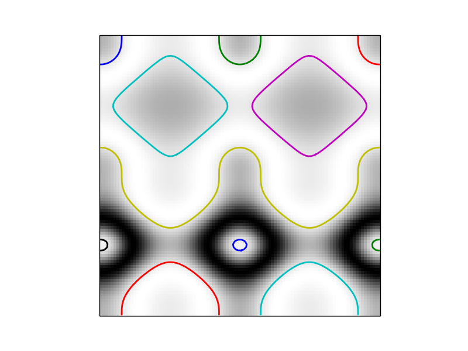

skimage.measure.find_contours uses a marching squares method to find constant valued contours in an image. Array values are linearly interpolated to provide better precision of the output contours. Contours which intersect the image edge are open; all others are closed.
The marching squares algorithm is a special case of the marching cubes algorithm (Lorensen, William and Harvey E. Cline. Marching Cubes: A High Resolution 3D Surface Construction Algorithm. Computer Graphics (SIGGRAPH 87 Proceedings) 21(4) July 1987, p. 163-170).
import numpy as np
import matplotlib.pyplot as plt
from skimage import measure
# Construct some test data
x, y = np.ogrid[-np.pi:np.pi:100j, -np.pi:np.pi:100j]
r = np.sin(np.exp((np.sin(x)**3 + np.cos(y)**2)))
# Find contours at a constant value of 0.8
contours = measure.find_contours(r, 0.8)
# Display the image and plot all contours found
plt.imshow(r, interpolation='nearest')
for n, contour in enumerate(contours):
plt.plot(contour[:, 1], contour[:, 0], linewidth=2)
plt.axis('image')
plt.xticks([])
plt.yticks([])
plt.show()
Python source code: download (generated using skimage 0.9.0)